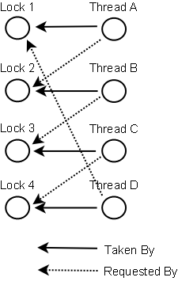

Deadlock
데드락이란, 둘 이상의 쓰레드가 lock 을 획득하기 위해 기다리는데, 이 lock 을 잡고 있는 쓰레드도 똑같이 다른 lock 을 기다리며 서로 블록 상태에 놓이는 것을 말한다. 데드락은 다수의 쓰레드가 같은 lock 을, 동시에, 다른 명령에 의해, 획득하려 할 때 발생할 수 있다.
예를 들자면, thread1 이 A 의 lock 을 가지고 있는 상태에서 B 의 lock 을 획득하려 한다. 그리고 thread2 는 B 의 lock 을 가진 상태에서 A 의 lock 을 획득하려 한다. 데드락이 생긴다. thread1 은 절대 B 의 lock 을 얻을 수 없고, 마찬가지로 thread2 는 절대 A 의 lock 을 얻을 수 없다. 두 쓰레드 중 어느 쪽도 이 사실을 모를 것이며, 쓰레드들은 각자의 lock을 가진 채로 영원히 블록 상태에 빠진다. 이러한 상황이 데드락이다.
아래와 같이 표현된다:
Thread 1 locks A, waits for B
Thread 2 locks B, waits for A
1. Deadlock 예제
다음은 서로 다른 인스턴스가 동기화된 메소드를 호출하는, TreeNode 클래스의 예제이다.
public class TreeNode {
TreeNode parent = null;
List children = new ArrayList();
public synchronized void addChild(TreeNode child){
if(!this.children.contains(child)) {
this.children.add(child);
child.setParentOnly(this);
}
}
public synchronized void addChildOnly(TreeNode child){
if(!this.children.contains(child){
this.children.add(child);
}
}
public synchronized void setParent(TreeNode parent){
this.parent = parent;
parent.addChildOnly(this);
}
public synchronized void setParentOnly(TreeNode parent){
this.parent = parent;
}
}
TreeNode parent;
TreeNode child;
// Thread 1 에서 호출
parent.addChild(child);
// Thread 2 에서 호출
child.setParent(parent);
위와 같이 같은 parent, child 객체에 대해서 Thread1, Thread2가 각각 synchronized로 동기화된 메서드를 호출하게 되면 데드락이 발생할 수 있다.
-
parent.addChild(child) 메서드 내부에서 child.setParentOnly(this)를 호출
-
동시에 child.setParent(parent) 메서드 내부에서 parent.addChildOnly(this) 를 호출
-
1번에서 child의 setParentOnly 메서드를 호출하려고 하지만 2번에서 child의 setParent 메서드가 실행중이기 때문에 기다리게 된다.
이와 동시에 2번에서 parent의 addChildOnly 메서드를 호출하려고 하지만 1번에서 이미 addChild 메서드가 실행중이기 때문에 기다리게 된다.
위 데드락은 서로 같은 Instance에 대해서 synchronized로 동기화되는 메서드를 서로 호출했기 때문에 발생하게된다.
1.1. 더 복잡한 Deadlock
데드락은 셋 이상의 쓰레드에서도 발생할 수 있다. 이런 현상은 감지되기 더 어렵다.
다음은 네 쓰레드가 데드락에 빠진 예제이다.
Thread 1 locks A, waits for B
Thread 2 locks B, waits for C
Thread 3 locks C, waits for D
Thread 4 locks D, waits for A
Thread 1 은 Thread 2 를 기다리고, Thread 2 는 Thread 3 을, Thread 3 은 Thread 4 를 기다린다. 그리고 Thread 4 는 Thread 1 을 기다린다.
2. Deadlock 발생 조건
위 예제에서 볼 수 있듯 아래 4가지 조건을 동시에 충족하면 Deadlock이 발생한다.
2.1. Mutual Exclusion(상호배제 - 자원에 대한 동시접근 불가)
한번에 여러 Thread(or Process)가 같은 자원에 접근하지 못하도록 막아둔 상태. 즉, 내가 사용하고 있을때 다른 Thread는 접근을 하지 못하게 막아둔 상태이다. (ex- synchronized)
2.2. Hold and Wait(점유대기 - 점유하고 기다리기)
자원을 가지고 있는 상태에서 다른 Thread가 쓰는 자원을 반납하길 기다리고 있는 상태다.
2.3. No Preemption(비선점 - 자원 뺏어오지 못함)
다른 Thread가 이미 점유한 자원을 강제로 뺏어오지 못하는 상태이다.
2.4. Circular Wait(순환대기 - 순환 형태로 대기함)
위 복잡한 Deadlock 상태처럼 서로 다른 Thread를 기다리고 있는 상태가 Circular에 형성되는 경우이다. (즉, 내가 너를 기다리고 너는 나를 기다리는 상황으로 2개 Thread 사이의 Deadlock도 결국은 Circular한 상황인 것이다.)
3. Deadlock 해결(예방, 회피, 감지, 무시)
Deadlock 상태에 대한 해결 방법으로 예방, 회피, 감지, 무시가 있다.
-
예방
Deadlock이 애초에 발생하지 않도록 하는 것. Deadlock은 4가지 조건이 동시에 충족됬을때 발생한다.
즉, 4가지 조건 중 하나라도 충족하지 않는다면 Deadlock은 발생하지 않게되는데 Deadlock 예방이란 이 4가지 조건을 회피하는 방법을 말한다. -
회피
Deadlock이 발생할것 같을때 발생하지 않도록 하는 것.
은행원 알고리즘이 이에 해당한다. (자원 요청 -> 안전 여부 체크 -> 안전 상태이면 자원 할당, 아닌경우 거부) -
감지
Deadlock이 발생했음을 감지하고 후처리 하는 것. -
무시
예방, 회피, 감지 모두 성능에 영향을 미친다. 만약 중요하지 않은 Deadlock이라면 무시하도록 한다.
아래는 Deadlock에 해결에 대한 세 가지 기술(Lock 정렬, Lock 타임아웃, Deadlock 감지)이다.
3.1. Lock 정렬
Lock 정렬은 Deadlock 예방 방법 중 순환대기 상태를 발생하지 않도록 하는 방법이다.
데드락은 다수의 쓰레드들이 같은 락들을 필요로 하면서 서로 다른 순서로 서로의 락을 획득하려 할 때 발생한다.
만약 모든 락이 항상 같은 순서로 획득된다는 보장이 있다면, 데드락은 발생할 수 없다.
Thread 1:
lock A
lock B
Thread 2:
wait for A
lock C (when A locked)
Thread 3:
wait for A
wait for B
wait for C
위 예를 보면 각 쓰레드가 Lock을 요구하는 순서는 A > B > C 순으로 동일하다. 이렇게 순서가 동일할 경우 데드락에 빠질 수 없다.
이 방법은 유효하지만 데드락 방지 기술이다. 하지만 획득하려는 락의 순서를 알고 있는 상태에서만 사용될 수 있다. 언제나 사용할 수 있는 방법은 아니다.
3.2. Lock 타임아웃
Deadlock 감지 방법 중 하나로 Lock 시도에 타임아웃을 거는 방법이 있다.
이 타임아웃이란 쓰레드가 락을 획득하기 위해 기다리는 시간을 정해놓는다는 것을 의미한다. 락 타임아웃을 건 쓰레드가 주어진 시간을 소진하기까지 락을 획득하지 못하면 쓰레드는 이 락을 포기한다.
만약 쓰레드가 반드시 획득해야 하는 락에서 타임아웃이 걸리면, 이 쓰레드가 잡고 있는 모든 락을 해제하고 ‘얼마간의’ 시간을 기다린 뒤 다시 락을 시도한다. 이 얼마간의 시간이란, 같은 락(타임아웃이 걸린)을 획득하려는 다른 쓰레드에게 모든 락을 획득할 기회를 주는 것이다.
다음 예제는 두 쓰레드가 다른 순서로 같은 두 락을 획득하려 하다가 재시도를 하게 되는 경우이다:
Thread 1 locks A
Thread 2 locks B
Thread 1 attempts to lock B but is blocked
Thread 2 attempts to lock A but is blocked
Thread 1's lock attempt on B times out
Thread 1 backs up and releases A as well
Thread 1 waits randomly (e.g. 257 millis) before retrying.
> Thread1이 자신의 lock을 모두 해지하고 재시도까지 257mill 대기한다.
Thread 2's lock attempt on A times out
Thread 2 backs up and releases B as well
Thread 2 waits randomly (e.g. 43 millis) before retrying.
> Thread2가 자신의 lock을 모두 해지하고 재시도까지 43mill 대기한다.
위 예에서 Thread1, Thread2는 모두 Timeout된 이후 다음 재시도까지 기다리고 있는 상황이다.
이 때 Thread2가 다음 재시도까지 대기 시간이 짧기 때문에 Thread 1 보다 약 200 밀리초 먼저 락 획득을 시도하게 될 것이다. 그리고 Thread 1 는 락 A 획득을 위해 기다리다가 Thread 2 의 작업이 끝나면 락을 획득할 수 있게 된다(그 사이 Thread 2 나 다른 쓰레드가 끼어들어 락을 가져가지 않는다면)
3.2.1 주의할 점
여기서 기억할만한 점은, 락 타임아웃은 꼭 데드락에 대해서만 발생하지 않는다는 것이다. 락 타임아웃은 데드락 뿐만 아니라, 단순히 작업을 처리하기 위해 락을 오래 잡고 있게 되면 얼마든지 발생할 수 있다.
또한, 비록 타임아웃과 백업을 적용 하더라도 많은 Thread가 동일한 리소스를 취득하려고 경쟁하는 것은 부담이 있다.
만약 2개의 Thread가 0~500 millis 정도의 대기 시간을 갖는다면 딱히 문제는 발생하지 않을 것이다. 하지만 Thread 개수가 10~20개 정도로 많아진다면 다르다.
이러면 Thread들이 동일한 대기시간을 가질 가능성이 높아진다.
3.2.2. 문제점
락 타임아웃 메카니즘의 문제점은 동기화 블록에의 진입에 대해서는 타임아웃을 설정할 수 없다는 것이다. 이를 위해서는 커스텀 락 클래스를 만들거나 java.util.concurrency 패키지의 컨커런시 구조를 사용해야 한다.
3.3. Deadlock 감지
데드락 감지는 더 무거운 데드락 방지 메카니즘이다. 이것은 락 정렬이나 락 타임아웃으로 커버할 수 없는 상황에 적용될 수 있다.
락 감지를 위해 어떤 쓰레드가 락을 획득하면 이는 쓰레드와 락의 상관관계를 가지고 있는 데이터 스트럭처(맵, 그래프 기타등등)에 전달된다. 그리고 이를 통해 Deadlock이 발생하는지를 감지한다.
예를 들어, Thread A가 7번 락을 요청했는데 7번 락이 Thread B에 잡혀 있다면, Thread A 는 Thread B 가 자신(Thread A)이 가진 락들 요청하지 않았는지 체크한다. 만약 Thread B가 요청을 했엇다면, 데드락이 발생한다.
물론 실제 데드락 시나리오는 두 쓰레드간에 발생하는 방황보단 훨씬 복잡할 수 있다. Thread A 는 Thread B 를 기다리고, Thread B 는 Thread A 를 기다릴 수 있다. Thread A 가 데드락을 감지하기 위해서는 Thread B 에 의해 요청된 락을 수동적으로 확인해야 한다. Thread B 의 락 요청에서부터, Thread A 는 Thread C 로, Thread C 는 Thread D 로, Thread A 가 가진 락을 찾아나가게 된다. 그리고 락을 찾으면 데드락이 발생한다.
3.3.1. 복잡한 데드락과 감지 그래프
아래는 네 개의 쓰레드로부터 요청된 락들의 그래프이다. 이건 데이터 구조가 데드락 감지를 위해 쓰인다.

그럼 데드락이 감지되면 쓰레드는 무엇을 하는걸까?
한가지 가능한 일은 모든 락을 해제하고, 백업하고, 무작위의 시간을 대기한 뒤 재시도하는 것이다. 이것은 락 타임아웃 메카니즘과 비슷한데, 락 타임아웃에서의 쓰레드는 백업까지만 수행한다. 하지만 백업-대기 를 수행하더라도 만약 많은 수의 쓰레드가 같은 락을 요청한다면 쓰레드들은 결국 반복적으로 데드락에 빠질 수 있다.
여기서 더 나은 선택은, 쓰레드의 우선순위를 정하여 한 번에 한 쓰레드(혹은 적은 수, 몇 개의 쓰레드)만 백업을 하도록 하는 것이다. 남은 쓰레드들은 마치 데드락이 발생하지 않은 것처럼, 필요한 락 획득을 계속해서 시도할 것이다. 만약 쓰레드의 우선순위가 고정적이라면, 동일한 쓰레드들은 언제나 높은 우선순위를 가지게 될 것이다. 이를 방지하기 위해 데드락이 감지될 때마다 우선순위 할당을 랜덤하게 하는 방법이 있다.
[참고 문서]
참고 블로그1(추천)
참고 블로그2
참고 블로그3
댓글남기기